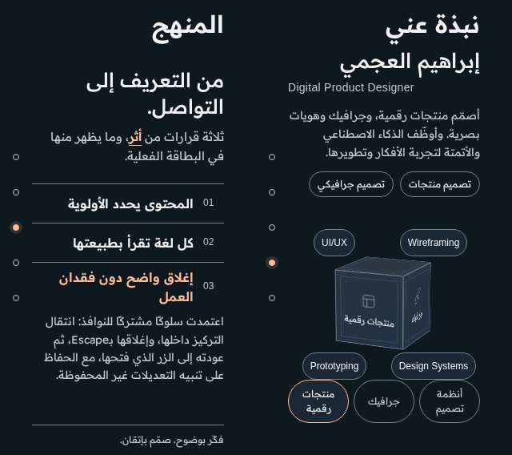

تصحيح ملاحظات المالك
26 نوفمبر 2026 · Concept فقط
ملاحظاتك كشفت تعارضًا مع فكرة العرض المعتمدة. أُلغيت توصية الأقسام الطويلة والترويسة المثبتة، وأُعيد عقد Fit Viewport.
| المشكلة | السبب الجذري | الإصلاح |
|---|
| المنهج لا يتبع Dark | خلفية ونصوص بألوان ثابتة. | جميع ألوان القسم من رموز الثيم المشتركة. |
| ضياع Fit Viewport | ارتفاع الأقسام auto وScroll Snap غير إلزامي. | كل قسم بارتفاع الشاشة؛ الأعمال بتصفح أفقي داخل القسم، والقرارات تُفتح واحدًا تلو الآخر دون قص نصوصها. |
| أدوات اللغة والثيم مثبتة | حاوية fixed خارج الأقسام. | الأدوات داخل ترويسة Hero في التدفق الطبيعي وتختفي عند الانتقال. |
الاختبار
48 حالة: 12 مقاسًا × لغتين × ثيمين، بخط Readex الفعلي. فُحص ارتفاع الأقسام وحدود المحتوى، والبطاقات الخمس، والقرارات الثلاثة عند فتح كل منها. لم يُرصد قصّ رأسي أو خطأ JavaScript. تمت إضافة اختبار Regression يمنع عودة هذه العيوب.
النتائج الخام · المعاينة العربية · English Preview

اختبار Chromium بمحاكاة الأجهزة؛ ليس على iPhone/Safari فعلي. لا دمج ولا تعديل Production.